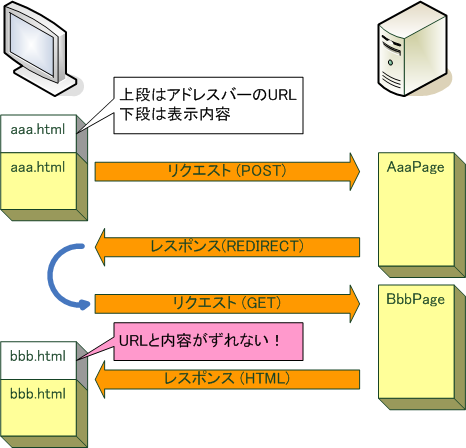

概要
Teeda Extensionは， 画面遷移にPRG (POST-REDIRECT-GET) パターンを採用しています．
PRGパターンとは， POSTメソッドによるリクエストに対してリダイレクトを返し， GETメソッドの応答として遷移先の画面を表示するというものです．
URLのズレ
ページモデルを採用した場合， 画面遷移の際にブラウザのアドレスバーに表示されるURLと， 実際に表示されている内容がずれる場合があります．
以下の例では，aaa.htmlのフォームをサブミットしてbbb.htmlに画面遷移します．

aaa.htmlに対応するAaaPageから， bbb.htmlに対応するBbbPageに (Servlet APIの) forwardで画面遷移すると，ブラウザのアドレスバーにはリクエストしたURLであるaaa.htmlが表示されたままですが， 表示されている内容はbbb.htmlとなります．
PRGパターンの場合
Teedaでは，PRGパターンを採用することにより， 画面遷移しても画面遷移の際にブラウザのアドレスバーに表示されるURLと， 実際に表示されている内容がずれないようにしています．
以下の例では，aaa.htmlのフォームをサブミットしてbbb.htmlに画面遷移します．
aaa.htmlに対応するAaaPageは， bbb.htmlへのリダイレクトをレスポンスとして返します． そのため，ブラウザはbbb.htmlをGETメソッドで要求し，その結果としてbbb.htmlが表示されます． ブラウザのアドレスバーはリダイレクト先であるbbb.htmlとなるため， 表示内容とのズレが発生しません．
また，PRGパターンで表示される画面はGETリクエストの結果であるため， 通常ブラウザは画面をキャッシュすることが可能です． このため， 「戻る」「進む」ボタンが有効であり， 意図しない二重サブミットを防ぐことができます．